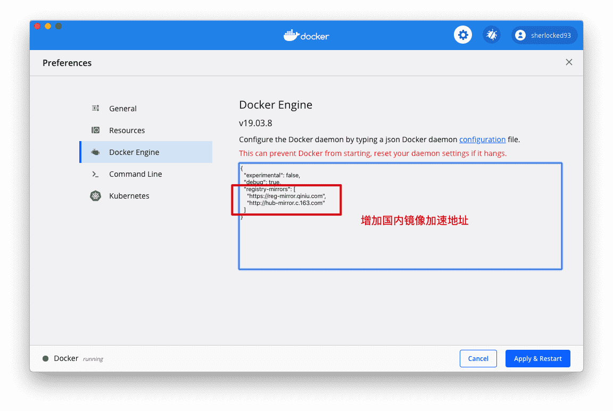
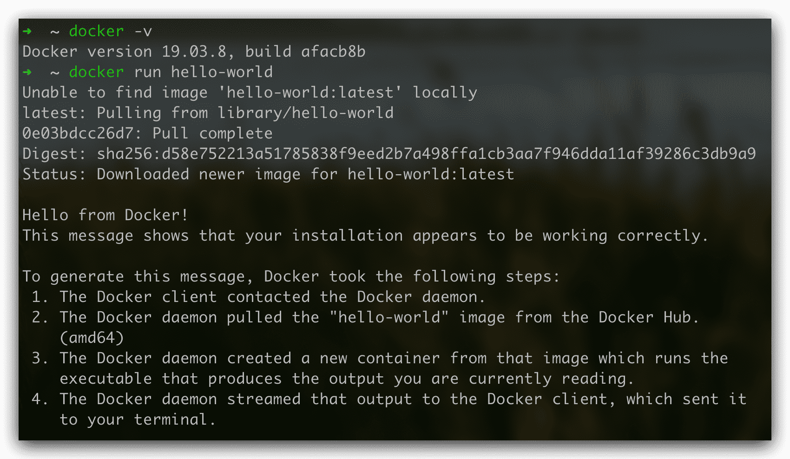
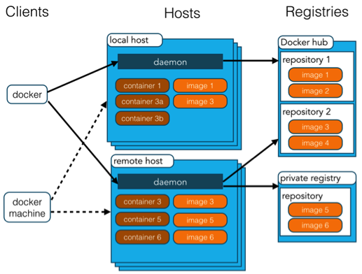
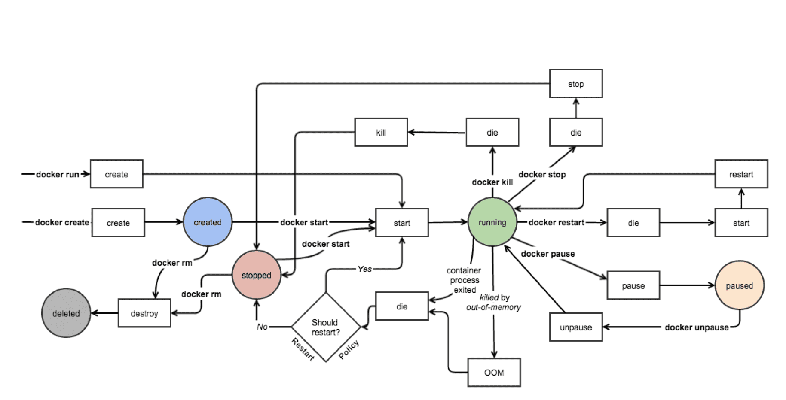
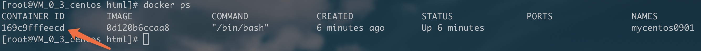
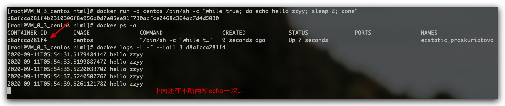
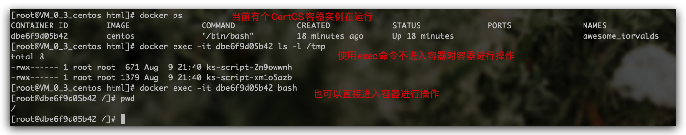
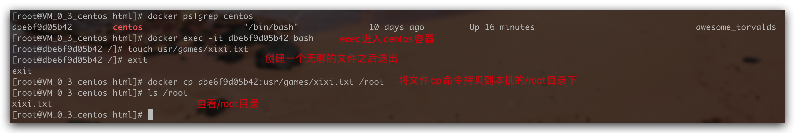
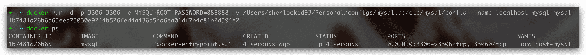
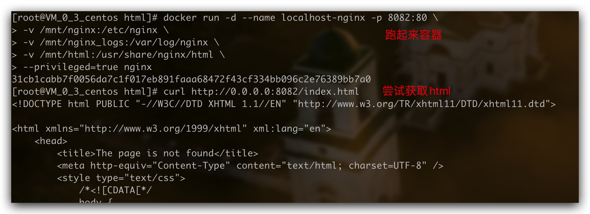

# 手摸手带你 Docker 从入门到实践
在下最近遇到要在服务器上安装 Mysql、Nginx、EasyMock 等工具的场景，这里记录一下我使用 Docker 安装的过程，希望也能在类似的场景中帮助到大家～
本文前备知识需要一些 Linux 的一些基本命令，推介先看一下 <半小时搞会 CentOS 入门必备基础知识> 这篇文章。
CentOS 版本： 7.6
Nginx 版本： 1.16.1
Docker 版本： 19.03.12
你多学一样本事，就少说一句求人的话
# 1. 介绍
# 1.1 出现的原因
前后端开发到测试到生产的过程中，经常会遇到一个问题，明明我在本地跑没问题，为什么到测试环境或者生产环境就报错了了呢，常常这是因为开发、测试、生产的环境与配置不同导致的。
折腾过环境配置的人都明白其中麻烦，换一台系统、虚拟机、机器，就又要重来一次，费力费时。由于环境和配置的原因，各种奇奇怪怪因为环境和配置的 Bug，总是像打地鼠游戏里面的地鼠一样不断冒出来 🐹
![](c9ce28e3e43e4bb292b92fd1a4786fe9tplv-k3u1fbpfcp-zoom-1.image#vwid=1586&vhei=600" alt="Docker" style="zoom:80%;" />
Docker 对这个问题给出了一个很好的解决方案，通过镜像将除了系统之外所需要的系统环境由下而上打包，达到服务跨平台的无缝运作。也就是说，安装的时候，把特定的环境一模一样地搬过来，从而解决「在我的电脑上能跑，在 xx 环境就跑不了」的情况。
另外一个重要的原因，就是轻量，基于容器的虚拟化，Docker 的镜像仅包含业务运行所需的 runtime 环境，一个 CentOS/Ubuntu 基础镜像仅 170M，因为轻量一个宿主机可以轻松安装数百个容器。
# 1.2 是什么
Docker 是基于 Go 语言实现的云开源项目，从 2013 年发布到现在一直广受关注。Docker 可以让你像使用集装箱一样快速的组合成应用，并且可以像运输标准集装箱一样，尽可能的屏蔽代码层面的差异。它将应用程序与该程序的依赖，打包在一个文件里面。运行这个文件，就会生成一个虚拟容器。
程序在这个虚拟容器里运行，就好像在真实的物理机上运行一样。有了 Docker，就不用担心环境问题。
本文就不对比虚拟机跟 Docker 的区别和优劣了，每个文章都有，说烂了，想了解的话可以百度一下 😂，我这里就不多说了，下面直接看看怎么安装怎么用起来吧。
# 2. 安装 & 配置
# 2.1 Mac 下安装
在下直接使用 Homebrew Cask 来安装，Mac 下：
# Homebrew 安装 | |
braw cask install docker |
即可，安装完输入命令，直接报错！
➜ ~ docker | |
zsh: command not found: docker # 报错 |
遇到这个报错别担心，安装完之后要在应用列表里面双击 Docker 应用，输入密码之后就可以使用这个命令了 😅。
# 2.2 CentOS 下安装
Docker 要求 CentOS 版本必须在 6.5 及以上才可以安装。
# 安装 | |
sudo yum install yum-utils device-mapper-persistent-data lvm2 | |
sudo yum-config-manager --add-repo https://download.docker.com/linux/centos/docker-ce.repo | |
sudo yum install docker-ce | |
# 开启 Docker | |
sudo systemctl start docker |
在 Windows 上可以直接下载安装包来安装，或者 Mac 上不使用 Homebrew 也可以去官网直接下载安装包来安装，百度一下到处都是安装方法，其他的就不用多说。
# 3. 简单配置并跑起来
# 3.1 配置镜像加速
在 MacOS 的 Docker 配置 Perferences -> Docker Engine 或者 Windows 的 Settings -> Deamon 中的 JSON 中增加一项 registry-mirrors 如下

配置完之后在命令行中 docker info 就可以查看到我们配置的镜像加速地址了。
➜ ~ sudo docker info | |
... | |
Registry Mirrors: | |
https://reg-mirror.qiniu.com/ | |
http://hub-mirror.c.163.com/ | |
https://registry.docker-cn.com/ | |
... |
如果你的系统的 Docker 没有客户端，比如 CentOS 中，可以直接修改 deamon 配置文件：
# 修改 / 创建 docker 的 deamon 配置文件 | |
sudo vi /etc/docker/daemon.json | |
# 修改为如下配置 | |
{ | |
"experimental": false, | |
"debug": true, | |
"registry-mirrors": [ | |
"https://reg-mirror.qiniu.com", | |
"http://hub-mirror.c.163.com", | |
"https://registry.docker-cn.com" | |
] | |
} | |
# 修改完 :wq 重启 | |
sudo systemctl restart docker |
# 3.2 Hello World ！
然后就可以快乐跑起来我们第一个 Docker 指令 Hello World 了

Good start ！ 🎉
# 4. 镜像 & 容器 & 仓库
镜像和容器的关系就像类和类的实例，一个镜像可以同时跑多个容器，单个容器实例又可以创建新的镜像。如下图：

下面解释一下这个图里面出现的元素
| 概念 | 说明 |
|---|---|
| Docker 镜像 Images | 用于创建 Docker 容器的只读模板，比如 Ubuntu 16.04 系统、Nginx 1.16.0 等，是一个特殊的文件系统，包括容器运行时需要的程序、库、资源、参数等，但不包含任何动态数据，内容在构建后也不会被改变，一个镜像可以创建多个容器 |
| Docker 容器 Container | 容器是独立运行、相互隔离的一个或一组应用，是镜像创建的运行实例，实质是进程，可以看作为一个简易版的 Linux 环境 + 运行在其中的应用程序 |
| Docker 客户端 Client | 客户端通过命令行或者其他工具使用 Docker SDK (docs.docker.com/develop/sdk…) 与 Docker 的守护进程通信 |
| Docker 主机 Host | 一个物理或者虚拟的机器用于执行 Docker 守护进程和容器 |
| Docker 仓库 Repository | 集中存放镜像文件的地方，分为公有仓库和私有仓库。 |
| Docker 注册服务器 Registry | 是一个集中存储、分发镜像的服务，官方的叫 Docker Hub。一个 Docker Registry 中可包含多个仓库，每个仓库可以包含多个标签 Tag 的镜像，不同的标签对应不同的版本 |
| Docker Machine | Docker Machine 是一个简化 Docker 安装的命令行工具，通过一个简单的命令行即可在相应的平台上安装 Docker，比如 VirtualBox、 Digital Ocean、Microsoft Azure |
容器的生命周期图示

容器的五个核心状态，也就是图中色块表示的：Created、Running、Paused、Stopped、Deleted：
- Created：容器已经被创建，容器所需的相关资源已经准备就绪，但容器中的程序还未处于运行状态。
- Running：容器正在运行，也就是容器中的应用正在运行。
- Paused：容器已暂停，表示容器中的所有程序都处于暂停 不是停止不是停止 状态。
- Stopped：容器处于停止状态，占用的资源和沙盒环境都依然存在，只是容器中的应用程序均已停止。
- Deleted：容器已删除，相关占用的资源及存储在 Docker 中的管理信息也都已释放和移除。
本文主要关注于使用，就不太赘述这些状态的切换等，下面直接上手。
# 5. 基本使用
# 5.1 操作命令
# 开启 Docker 开机自启动 | |
sudo systemctl enable docker | |
# 关闭 Docker 开机自启动 | |
sudo systemctl disable docker |
# 5.2 镜像命令
# 去下载镜像，先从本地找，没有去镜像，最后没有去 hub，标签不写默认为 lastest | |
docker pull [镜像名]:[标签Tag] | |
# 列出本机的所有 image 文件，-a 显示本地所有镜像（包括中间镜像），-q 只显示镜像 ID，--digests 显示镜像的摘要信息 | |
docker image ls | |
docker images | |
# 删除 image 文件，-f 强制删除镜像 | |
docker rmi [镜像名][:标签Tag] | |
docker rmi [镜像名1][:标签Tag] [镜像名2][:标签Tag] # 删多个 | |
docker rmi $(docker ps -a -q) # 删全部，后面是子命令 | |
# 查询镜像名称，--no-trunc 显示完整的镜像描述，--filter=stars=30 列出 star 不少于指定值的镜像，--filter=is-automated=true 列出自动构建类型的镜像 | |
docker search [关键字] | |
# 下载镜像，标签 tag 不写默认为 lastest，也可以自己加比如 :3.2.0 | |
docker pull [镜像名][:标签Tag] |
# 5.3 容器命令
# 列出本机正在运行的容器，-a 列出本机所有容器包括终止运行的容器，-q 静默模式只显示容器编号，-l 显示最近创建的容器 | |
docker container ls # 等价于下面这个命令 | |
docker ps | |
# 新建并启动容器 | |
docker run [option] [容器名] | |
# 启动容器 | |
docker start [容器ID]/[容器Names] | |
# 重启容器 | |
docker restart [容器ID]/[容器Names] | |
# 终止容器运行 | |
docker kill [容器ID] # 强行终止，相当于向容器里面的主进程发出 SIGKILL 信号，那些正在进行中的操作会全部丢失 | |
docker kill $(docker ps -a -q) # 强行终止所有容器 | |
docker stop [容器ID] # 从容终止，相当于向容器里面的主进程发出 SIGTERM 信号，然后过一段时间再发出 SIGKILL 信号 | |
docker stop $(docker ps -a -q) # 终止所有容器 | |
# 终止运行的容器文件，依然会占据硬盘空间，可以使用 docker container rm 命令删除，-f 强制删除可以删除正在运行的容器 | |
docker rm [容器ID] | |
docker rm `docker ps -aq` # 删除所有已经停止的容器，因为没停止的 rm 删不了需要加 - f | |
# 查看容器的输出，-t 加入时间戳，-f 跟随最新日志打印，--tail 数字显示最后多少条，如果 docker run 时，没有使用 - it，就要用这个命令查看输出 | |
docker logs [容器ID] | |
# 查看容器进程信息 | |
docker top [容器ID]/[容器Names] | |
docker port [容器ID]/[容器Names] | |
# 退出容器 | |
exit # 容器退出 | |
ctrl + p + q # 容器退出，快捷键 | |
# 进入容器 | |
docker attach [容器ID] # 退出容器时会让容器停止，本机的输入直接输到容器中 | |
docker exec -it [容器ID] # 退出容器时不会让容器停止，在已运行的容器中执行命令，不创建和启动新的容器 | |
# 设置容器在 docker 启动时自动启动 | |
docker container update --restart=always [容器名字] |
这里要特别说一下 docker run 的 option ，因为最常用：
--name为容器指定一个名称；-d容器启动后进入后台，并返回容器 ID，即启动守护式容器；-P随机端口映射；-p 80:8080将本地 80 端口映射到容器的 8080 端口；bash容器启动以后，内部第一个执行的命令。这里启动 bash，保证用户可以使用 Shell；-i以交互模式运行容器，通常与-t同时使用；-t为容器重新分配一个伪输入终端，容器的 Shell 会映射到当前的 Shell，然后在本机窗口输入的命令，就会传入容器，通常与-i同时使用；--rm在容器终止运行后自动删除容器文件；--restart=always设置容器自启动；-v /xxx:/yyy映射命令，把本机的 xxx 目录映射到容器中的 yyy 目录，也就是说改变本机的 xxx 目录下的内容， 容器 yyy 目录中的内容也会改变；
比如我在 CentOS 下跑起来一个 CentOS 的 Docker 容器：
# 下载 | |
docker pull centos | |
# 在上面下载的 centos 镜像基础上，新建一个容器名为 mycentos0901 的 centos 实例，并进入这个容器的 bash | |
docker run -it --name mycentos0901 0d120b6ccaa8 | |
[root@169c9fffeecd /] # 进入容器，下面输入命令，注意这里 root 后面的一串 ID | |
ls # 可以看到 centos 的根目录文件列表 | |
docker # bash: docker: command not found 这个容器没有安装 docker |
是不是很神奇，我们可以在一开始的 CentOS 下面执行 docker ps 来查看容器列表：

你会发现上面那个 ID，正是下面列表中跑起来的这个容器的 ID，镜像的 ID 也是我们前面 pull 下来的 CentOS 镜像 ID，名字也是我们起的 mycentos0901 。
如果 docker run 之后报 Conflict. The container name "xxxx" is already in use by container 就直接运行 docker rm $(docker ps -a -q) 删除已停止的容器，或者精确删除 docker rm [containerID] 也可以，就可以了。
# 5.4 几个常见场景的命令使用
# 守护式启动容器
使用 centos 以后台模式启动一个容器 docker run -d --name mycentos0903 0d120b6ccaa8 ，启动之后 docker ps -a 查看，发现容器并不在运行中，这是因为 Docker 的运行机制：Docker 容器后台运行，必须有一个前台进程。
容器运行的命令如果不是那些一直挂起的命令，比如 top 、 tail ，运行结束会自动退出。所以为了让容器持续在后台运行，那么需要将运行的程序以前台进程的形式运行。
比如这里在后台运行一个命令，这个命令一直在打印 docker run -d centos /bin/sh -c "while true; do echo hello zzyy; sleep 2; done" ，然后我们 logs 查看一下：

# 退出容器后对容器操作
退出容器后可以通过 exec 方法对正在运行的容器进行操作：

# 在容器中拷贝文件到外部
拷贝文件使用 cp 命令
docker cp [容器ID]/[容器Names]:[要拷贝的文件目录] [本机目录] # 容器文件拷贝到本机 | |
docker cp [本机目录] [容器ID]/[容器Names]:[要拷贝的文件目录] # 本机文件拷贝到容器 |
cp 不仅能把容器中的文件 / 文件夹拷贝到本机，也可以把本机中的文件 / 文件夹拷贝到容器。
演示一下，这里先到容器里面创建一个无聊的文件 xixi.txt ，然后拷贝到本机：

实用的时候，我们可以拷贝配置、日志等文件到本地。
# 6. 安装 MySQL
# 查询镜像 | |
docker search mysql | |
# 下载镜像，实测没配置镜像加速的时候会比较慢，配置了就好一些 | |
docker pull mysql | |
# 查看镜像 | |
docker images | |
# 创建并运行容器 | |
docker run -d -p 3307:3306 -e MYSQL_ROOT_PASSWORD=888888 -v /Users/sherlocked93/Personal/configs/mysql.d:/etc/mysql/conf.d --name localhost-mysql mysql |
稍微解释一下上面的参数：
-p 3307:3306将本机的 3307 端口映射到 mysql 容器的 3306 端口，根据需要自行更改；-e MYSQL_ROOT_PASSWORD=<string>设置远程登录的 root 用户密码；--name <string>可选，设置容器别名；-v xxx/mysql.d:/etc/mysql/conf.d将本地目录下设置文件夹映射到容器的/etc/mysql/conf.d-v xxx/logs:/logs将本机指定目录下的logs目录挂载到容器的/logs-v xxx/data:/var/lib/mysql将主机制定目录下的data目录挂载到容器的/var/lib/mysql
运行截图：

然后去 Navicat 中就可以连接到 MySQL 了。
这也太爽了！真的是几行命令就装好了啊，比之前真是快乐多了 😂
# 7. 安装 Nginx
Nginx 的安装和其他的类似，如果你还不太了解 Nginx 如何使用，可以参看 这篇文章，看完基本就了解如何使用和配置了。
# 查询 / 下载镜像 | |
docker search nginx | |
docker pull nginx |

然后创建一个临时的容器，目的是把默认配置拷贝到本机，我这里把配置文件放到 /mnt 目录下，主要是三个配置文件夹：
/etc/nginx放置 Nginx 配置文件；/var/log/nginx/放置 Nginx 日志文件；/usr/share/nginx/html/放置 Nginx 前端静态文件都放在这个文件夹；
分别把这几个目录都拷贝到本机的 /mnt 文件夹下的 nginx 、 nginx_logs 、 html 文件夹。
刚刚创建的临时容器没用了 docker rm -f [临时容器ID] 把临时容器干掉，然后 docker run 重新创建 Nginx 容器：
docker run -d --name localhost-nginx -p 8082:80 \ | |
-v /mnt/nginx:/etc/nginx \ | |
-v /mnt/nginx_logs:/var/log/nginx \ | |
-v /mnt/html:/usr/share/nginx/html \ | |
--privileged=true nginx |
--privileged=true 表示容器内部对挂载的目录拥有读写等特权。
其他配置刚刚上面之前已经讲过，应该不用讲了。

然后在你自己浏览器上就可以访问了，如果是云服务器，记得开放对应端口。
# 8. 安装 Easy Mock
因为 Easy Mock 依赖 Redis 和 MongoDB，因此本地环境使用 docker-compose 来搭建 Easy Mock 应该算是最佳实践了。
# 安装 docker-compose
官方文档：docs.docker.com/compose/ins…
首先你得确定拥有 docker 环境，如果你是 Windows / Mac 用户，那么安装客户端，就会自带 docker-compose 了。
因为本次我们是在云服务器 CentOS7.6 上搭建，所以我们需要自行安装 docker-compose，运行如下命令，下载当前稳定版本的 docker-compose
sudo curl -L "https://github.com/docker/compose/releases/download/1.24.1/docker-compose-$(uname -s)-$(uname -m)" -o /usr/local/bin/docker-compose |
修改文件权限为可执行文件
sudo chmod +x /usr/local/bin/docker-compose |
验证是否安装成功
docker-compose version |
# 编写 docker-compose.yml 配置文件
可以参考官方文档给出的部署文档，也可以参考我下面的配置过程。
首先新建文件 docker-compose.yml 并将下面 docker-compose 文件内容复制进入 docker-compose.yml ，然后将内容中注释位置替换为自己需要的本地地址
version: '3' | |
services: | |
mongodb: | |
image: mongo:3.4.1 | |
volumes: | |
# /apps/easy-mock/data/db 是数据库文件存放地址，根据需要修改为本地地址 | |
- '/apps/easy-mock/data/db:/data/db' | |
networks: | |
- easy-mock | |
restart: always | |
redis: | |
image: redis:4.0.6 | |
command: redis-server --appendonly yes | |
volumes: | |
# /apps/easy-mock/data/redis 是 redis 数据文件存放地址，根据需要修改为本地地址 | |
- '/apps/easy-mock/data/redis:/data' | |
networks: | |
- easy-mock | |
restart: always | |
web: | |
image: easymock/easymock:1.6.0 | |
# easy-mock 官方给出的文件，这里是 npm start，这里修改为 npm run dev | |
command: /bin/bash -c "npm run dev:server" | |
ports: | |
- 7300:7300 # 改为你自己期望的映射 | |
volumes: | |
# 日志地址，根据需要修改为本地地址 | |
- '/apps/easy-mock/logs:/home/easy-mock/easy-mock/logs' | |
networks: | |
- easy-mock | |
restart: always | |
networks: | |
easy-mock: |
# 启动 Easy Mock
在 docker-compose 文件目录下，运行如下命令：
docker-compose up -d |
如果遇到 easymock docker 实例报文件权限错误
Error: EACCES: permission denied.... |
要在项目根目录执行以下命令
chmod 777 /yourfile/logs |
然后就可以通过浏览器上的 你的域名.com:7300 访问到 easy-mock 了！
如果你觉得域名后面跟着端口号挺难看的，你可以通过配置 Nginx 的二级域名来访问你部署的 easy-mock，配置二级域名的方法参见 这篇文章
# 9. 可视化管理
关于可视化查询工具，这里就简单推介一个 LazyDocker，由于是在终端运行的，而且支持键盘操作和鼠标点击，就挺骚气的，有了这个一些查询语句可以少打几次了。

安装比较简单，运行下面的命令：
docker run --rm -it -v \ | |
/var/run/docker.sock:/var/run/docker.sock \ | |
-v ~/.config/lazydocker:/.config/jesseduffield/lazydocker \ | |
lazyteam/lazydocker |
可以设置一个终端的 alias
alias lzd='docker run --rm -it -v /var/run/docker.sock:/var/run/docker.sock -v ~/.config/lazydocker:/.config/jesseduffield/lazydocker lazyteam/lazydocker' |
然后你在终端输入 lzd 就可以浏览你的镜像、容器、日志、配置、状态等等内容了。
# 10. 结语
由于在下目前使用 Docker 的主要场景是 MySQL、Nginx 之类工具的安装，所以本文所介绍的内容也大多属于这个场景。
篇幅原因 Docker 还有一些内容本文没有介绍，但上面的内容已基本满足日常的使用，其他 Docker 的内容可以关注一下在下的后续文章～
网上的帖子大多深浅不一，甚至有些前后矛盾，在下的文章都是学习过程中的总结，如果发现错误，欢迎留言指出～
参考文档：
- Empowering App Development for Developers | Docker 官方网站
- Docker 核心技术（基础篇）
- Docker 安装 mysql
- Docker 文档
- Docker-compose 文档
- 使用 docker 运行 easy-mock - 知乎
- docker-compose easy-mock - 简书
- 使用 docker 运行 easy-mock | CodingDiary
- easymock 官方 docker 仓库：easy-mock/easy-mock-docker
- 使用 docker 安装 nginx
作者其他高赞文章：
- JS 中可以提升幸福度的小技巧
- Vue 使用中的小技巧
- Nginx 从入门到实践，万字详解！
- 半小时搞会 CentOS 入门必备基础知识
- 手摸手 Webpack 多入口配置实践
- 前端路由跳转基本原理
PS：本文收录在我的博客，地址 Github - SHERlocked93/blog，也欢迎大家关注我的公众号【前端下午茶】，一起加油吧。 如果你感觉文章不错的话，也别忘了给作者点赞支持一下～